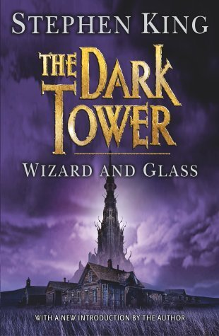

"Wizard and Glass"
- Read on 2020-02-27
- Rating: ️️️️️
- Format: 🎧 (27 hours 35 minutes)
This was the most coherent book in the series, and best self-standing book so far. I wouldn't read this if you haven't read any others in the series. It's simply Roland's back-story, and it (unlike many aspects of the first three books) makes sense essentially by itself. That said, if I were to go back and revisit the first three books, I wonder how much would have been hinted at, all along the way.
Stephen King's bread-and-butter may be suspense, but his tendency to write crude or graphic descriptions of so many things is not mine.
- Prior: Bossypants
- Next: Lock In